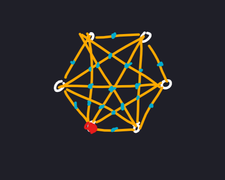
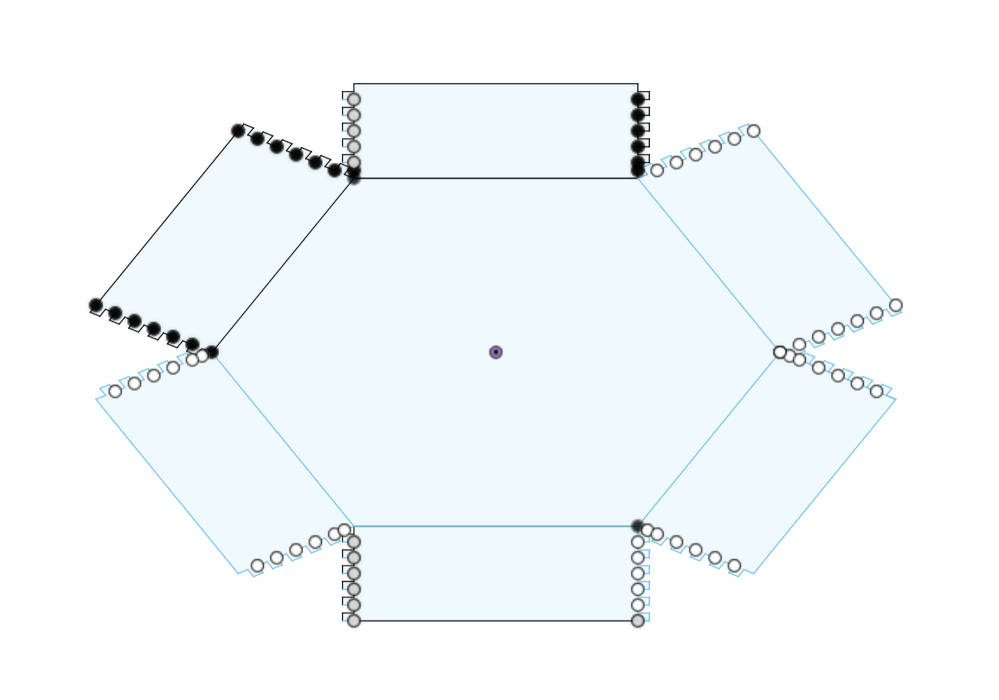
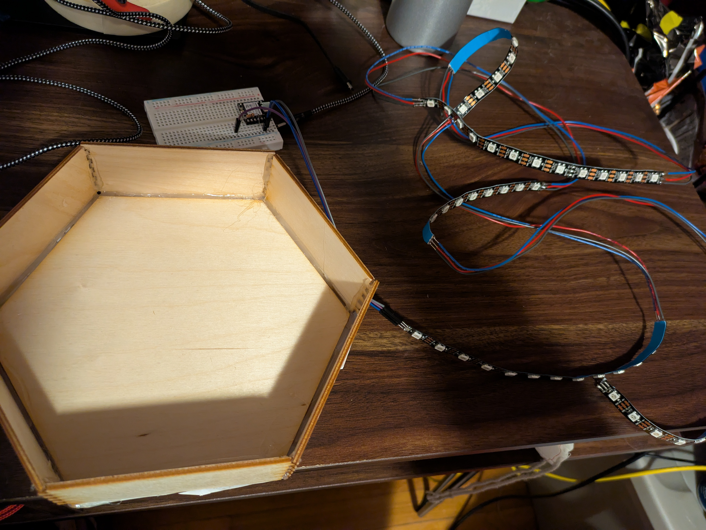
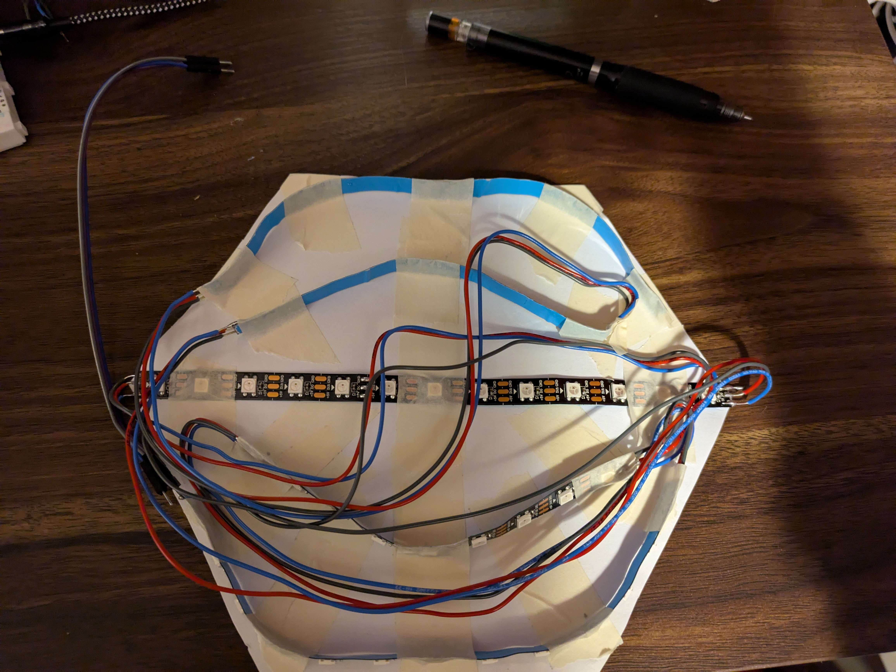

<div class="textcontainer">
<p class="margin"></p>
<h3>Final Project: Handheld Icebreaker</h3>
<p class="margin"></p>
As mentioned during our introduction week, the Handheld icebreaker game is an icebreaker game played in person, consisting of two main rules. The first is that when a person "throws" the turn to someone else, they exclaim "WA!" after which the person receiving it says "WA?" The second is that when the person next to you receives the turn, you make a chopping motion to the side that received the turn, exclaiming "HA!" In this way, one has to pay attention to not become overwhelmed and either miss the turn being passed to themselves or those next to them.
<p class="margin"></p>
This game feels similar in that I had made a game for week 4 of the course. As I did back then, I hope to create a reaction-based game, requiring the user to provide inputs within a time frame in order to not lose. However, in order to do so the game requires the ability to represent a lot more information.
<p class="margin"></p>
In order to explain the game as it will appear to the user, below is an initial sketch of the "screen" or interface that the user will expect to see:
<p class="margin"></p>

<p class="margin"></p>
To break it down, there are a total of "6 players" on the board, each depicted by a corner. One of these corners will belong to the user, which will be understood as the corner which is presented with the three buttons. One is for "chopping" to the left, one is for "catching" the turn, and another is for chopping" to the right.
<p class="margin"></p>
All of the lights that do not belong to a corner were placed as a halfway point between two adjacent corners, or were placed at the intersections between all the possible paths one could take from one corner to another. In most cases, the user will be able to see a set of 1 or 3 lights approach their corner and react accordingly, although the corner that the light will be passed on to will be completely random.
<p class="margin"></p>
One of the biggest issues facing this project was making a definite decision on "HOW" I was going to set up the project. If I meant to use LEDs, I couldn't very well wire twenty five individual LEDs to a single breadboard and expect to control each one with a single microcontroller. It was thanks to a specific LED strip by NeoPixel that I was then able to move forward from my minimum viable product. While I kept the idea of keeping associations between transitionary LEDs and corners by index, I would move away from the temporary pins that the code once used.
<p class="margin"></p>
<img src="./LEDbreakdown.jpg" width="716" height="537" alt="Breakdown of the LED strip Placements">
<p class="margin"></p>
After producing this sketch of how the LED strip would be organized, I then began to cut and solder the LED strip to allow for five separate but wired portions to be placed within the expected hexagonal case. For the sake of length, the LED strip did result in an odd set of indexes, with each strip either containing one or two unused LEDs between transitionary or corner LEDs. Otherwise, the act of independently soldering 25 units from an LED strip would have been too time consuming.
<p class="margin"></p>
While I had originally planned for the box to be made from cardboard, I instead laser cut pieces of plywood into the box's base, deciding to use paper for the "cover" as I could attach the LED strip portions to the roof and see them shine through the material.
<p class="margin"></p>

<p class="margin"></p>
One point of complication came from the box. Since it was originally modeled so that it would be cut from cardboard, the thickness of the teeth was set to 4mm rather than 3mm. This would produce a set of walls that would be slightly larger than the hexagon formed for the base of the box. However, with some hot glue and some structure provided by a bottom sheet of paper, the box is stable and well-cut.
<p class="margin"></p>

<p class="margin"></p>
Photo of the cables organized and taped onto the lid:
<p class="margin"></p>

<p class="margin"></p>
Short video of a light path:
<p class="margin"></p>
<video width="716" height="537" controls>
<source src="lightPath.mp4" type="video/mp4">
Your browser does not support the video tag.
</video>
<p class="margin"></p>
Arduino Code:
<p class="margin"> </p>
<div class="flexrow">
<a id="btn" href="./finalArduino.zip" download>Arduino Program
</a>
</div>
<p class="margin"> </p>
</div>